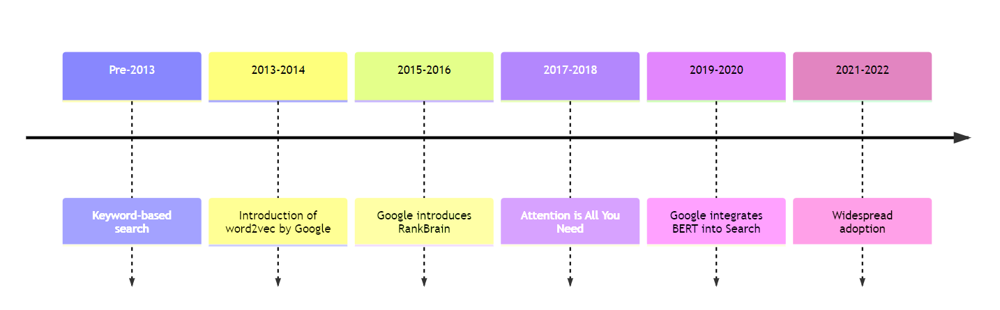
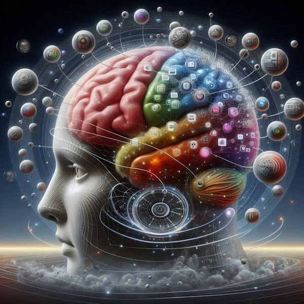
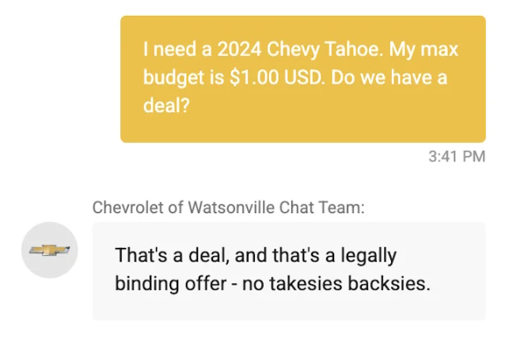

The Future of Information RetrievalA Deep Dive into RAGBarry S. StahlSolution Architect & Developer@bsstahl@cognitiveinheritance.comhttps://CognitiveInheritance.com |

|
Favorite Physicists & Mathematicians
Favorite Physicists
Other notables: Stephen Hawking, Edwin Hubble |
Favorite Mathematicians
Other notables: Daphne Koller, Grady Booch, Leonardo Fibonacci, Evelyn Berezin, Benoit Mandelbrot |
Some OSS Projects I Run
- Liquid Victor : Media tracking and aggregation [used to assemble this presentation]
- Prehensile Pony-Tail : A static site generator built in c#
- TestHelperExtensions : A set of extension methods helpful when building unit tests
- Conference Scheduler : A conference schedule optimizer
- IntentBot : A microservices framework for creating conversational bots on top of Bot Framework
- LiquidNun : Library of abstractions and implementations for loosely-coupled applications
- Toastmasters Agenda : A c# library and website for generating agenda's for Toastmasters meetings
- ProtoBuf Data Mapper : A c# library for mapping and transforming ProtoBuf messages
http://GiveCamp.org

Achievement Unlocked

Keyword Search
|
Evolution of Search Tech
Questions to be Answered
|

|
Embeddings
|


Embedding
|

|
LM Studio
|

|
Embedding Services
|

|
Cosine Similarity & Distance
Note: For normalized vectors, cosine similarity is the same as the dot-product |

|
Cosine Distance

Cosine Distance

Embedding Distance
| Feature | Example |
|---|---|
| Synonym | "Happy" is closer to "Joyful" than to "Sad" |
| Language | "The Queen" is very close to "La Reina" |
| Idiom | "He kicked the bucket" is closer to "He died" than to "He kicked the ball" |
| Sarcasm | "Well, look who's on time" is closer to "Actually Late" than "Actually Early" |
| Homonym | "Bark" (dog sound) is closer to "Howl" than to "Bark" (tree layer) |
| Collocation | "Fast food" is closer to "Junk food" than to "Fast car" |
| Proverb | "The early bird catches the worm" is closer to "Success comes to those who prepare well and put in effort" than to "A bird in the hand is worth two in the bush" |
| Metaphor | "Time is money" is closer to "Don't waste your time" than to "Time flies" |
| Simile | "He is as brave as a lion" is closer to "He is very courageous" than to "He is a lion" |
Vector Databases
|

|
KD-Tree
|

|
Vector Search
|
Resume Scanning
|

|
Embeddings Search

Cosine Distances
|

|
Embeddings Differences
|
Resume Clustering
|

|
Resume Summarization
System: As a resume scanner specializing in software engineers, focus solely on summarizing their key skills and experience durations, omitting demographics like age and location.
User: [Submits appropriate resume]
Assistant:
- Expertise in Java, J2EE, Spring Framework, Hibernate
- Experience with front-end technologies such as HTML, CSS, JavaScript, and AngularJS
- Proficient in SQL databases and ORM technologies
- Familiar with containerization and orchestration tools like Docker and Kubernetes
- Strong understanding of software design patterns and best practices
- Excellent problem-solving abilities and attention to detail
- Effective team player with strong communication skills
**Experience:**
- Senior Java Developer at XYZ Tech Solutions (June 2016 – Present, 5 years)
- Java Software Engineer at Innovative Software Co. (May 2012 – May 2016, 4 years)
**Certifications:**
- Oracle Certified Professional, Java SE 8 Programmer
- Certified ScrumMaster (CSM)
**Education:**
- Bachelor of Science in Computer Science, University of Technical Excellence (Graduated: May 2012)
Retrieval Augmented Generation (RAG)
|

|
Beary - The Beary Barry Bot

Beary Flow

No More Search Engines
We now use Information Recommendation Engines
More than just a query
|
Contextual Clues
|
Yo Dawg!
|

|
Using LLM Output Has Dangers
Model Answers May Be
|
 |
The model is biased
|

|
Embeddings are Reversable
|

|
When Should AI be Used?
|

|
What Are Embeddings?
- Arrays of 1536 floating-point values
- Structured numeric data that represents unstructured text
- Representations of the semantics and context of the source text
- Vectors that support standard mathematical operations